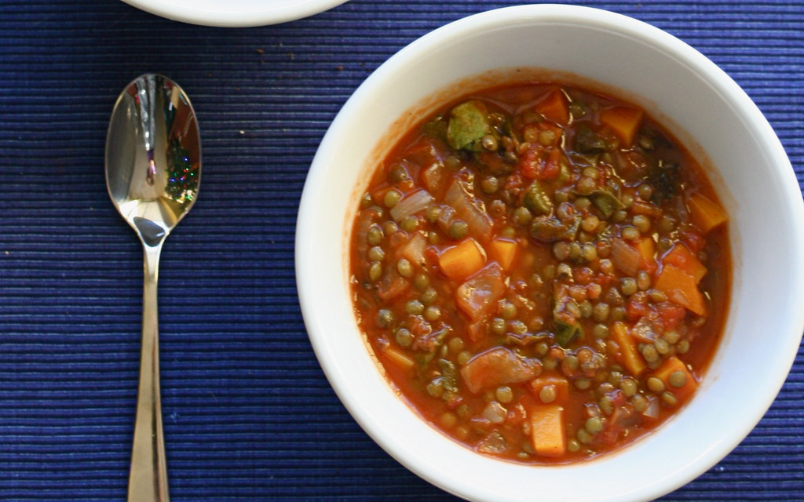

Vegan Lentils Soup

Credits: whitneyinchicago
Description
There's nothing better than a hot plate of lentils during a cold winter day.
I've been eating this recipe since I dropped meat from my diet years ago and i've never missed it on my lentils ever since.
Ingredients for two servings:
- 125 gr of lentils
- 2 cloves of garlic
- 2 medium sized onions
- 1 carrot on the bigger size
- 1/2 of green pepper
- 1 red pepper
- 4 tomatoes
- Cinnamon
- Cumin
- Turmeric
- Salt
- Pepper
- Olive oil
Instructions
- Leave the lentils in water the night before cooking.
- Cut the onions julianna style and set them aside.
- Mince the garlic cloves, cook them slowly, when they start to dance a little, add the onion and salt. Mix well.
- Turn up the heat, stir them nicely for a while, turn down the fire. Let the onion caramelize on its own.
- Dice the carrots, the tomatoes (take the seeds out) and the peppers, set them aside separately.
- Add the carrots to the pot, slowly cook them for 5 minutes, add the peppers, add some water and let it boil for 15 minutes, stir from time to time.
- Add the tomatoes, spices and the lentils. Cover the pot and let it boil till the lentills are done.
Home